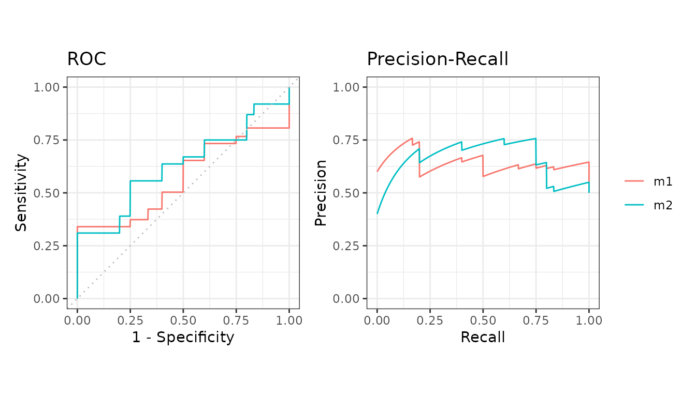

Evaluate cross-validation folds
Source:vignettes/articles/howto-cross-validation.Rmd
howto-cross-validation.RmdCross-validation folds are just several test sets, so everything on averaging over test sets applies. The only extra step is getting your data out of a data frame.
The usual shape of the data
M2N50F5 holds two models scored on 5 folds - one column
per model, one label column and one fold column.
| score1 | score2 | label | fold |
|---|---|---|---|
| 2.0606025 | 1.0689227 | pos | 1 |
| 0.3066092 | 0.1745491 | pos | 3 |
| 1.5597733 | -1.5666375 | pos | 1 |
| -0.6044989 | 1.1572727 | pos | 3 |
| -0.2229031 | 0.6070042 | pos | 5 |
| -0.7679551 | -1.7908147 | pos | 5 |
Straight into evalmod
evalmod() and mmdata() both take the fold
columns directly. This is the short way.
curves <- evalmod(
nfold_df = M2N50F5, score_cols = c(1, 2),
lab_col = 3, fold_col = 4,
modnames = c("m1", "m2"), dsids = 1:5
)
autoplot(curves)
Column names work as well as positions.
Converting first
format_nfold() does the conversion on its own if you
want the lists for something else.
Reading the result
Each model gets one averaged curve with a confidence band across the folds.
| modnames | curvetypes | mean | error | lower_bound | upper_bound | n |
|---|---|---|---|---|---|---|
| m1 | ROC | 0.5696667 | 0.2810846 | 0.2885820 | 0.8507513 | 5 |
| m1 | PRC | 0.6410081 | 0.2105395 | 0.4304686 | 0.8515476 | 5 |
| m2 | ROC | 0.6280000 | 0.1870468 | 0.4409532 | 0.8150468 | 5 |
| m2 | PRC | 0.6529690 | 0.1998983 | 0.4530706 | 0.8528673 | 5 |